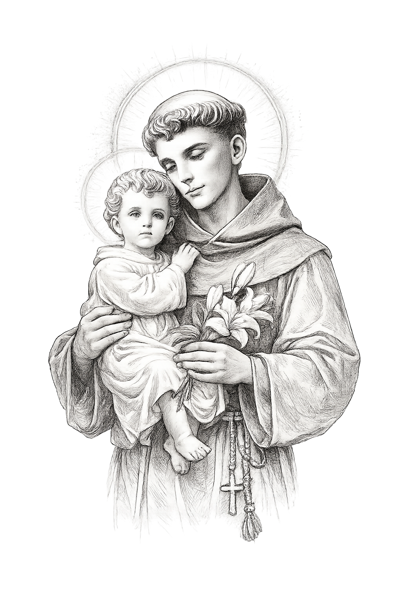

CP. Oremos. (silêncio) Fortificados por este alimento sagrado, nós vos damos graças, ó Deus, e imploramos a vossa clemência; fazei que perseverem na sinceridade do vosso amor aqueles que fortalecestes pela infusão do Espírito Santo. Por Cristo, nosso Senhor.
T. Amém.
CP. O Senhor esteja convosco.
T. Ele está no meio de nós.
CP. Iluminai, ó Deus de bondade, a vossa família, para que, abraçando a vossa vontade, possa viver fazendo o bem. Por Cristo, nosso Senhor.
T. Amém.
CP. Abençoe-vos Deus todo-poderoso, Pai e Filho ✠ e Espírito Santo.
T. Amém.
CP. Glorificai o Senhor com vossa vida; ide em paz e o Senhor vos acompanhe.
T. Graças a Deus.
1. Para ter acesso às cifras e aos áudios dos cantos: aponte a câmera do seu celular para o QR Code ao lado ou acesse: edicoescnbb.blog.
O Reino de Deus é como uma festa de casamento. As dez virgens, caracterizadas como cinco previdentes e cinco imprevidentes, representam a Igreja, as comunidades cristãs, cada cristão, em síntese, todos que caminham para o encontro com o "esperado" Noivo, Jesus. O noivo da parábola chegou de repente, assim como inesperadamente Jesus voltará. As mulheres dormiam e, quando acordaram, as previdentes entraram para a festa e as imprevidentes, por estarem despreparadas, correram em busca do óleo, mas era tarde demais, pois a porta da festa se fechou. No momento da chegada do noivo, ninguém estará em condição de ajudar ao outro, pois a questão é entre cada virgem e o noivo, entre cada pessoa e o Senhor.
As pessoas devem se ajudar, corrigir umas às outras, alertar quanto à preparação, enquanto estão a caminho. O óleo representa as boas obras realizadas durante a vida, a capacidade de perdoar, de acolher o próximo, o espírito e a prática da solidariedade e da misericórdia. São essas atitudes que vão preenchendo a vasilha com óleo suficiente para a espera e para a festa nupcial. A comunidade cristã deve viver neste mundo esperando vigilante o retorno do Senhor, pois ninguém sabe o momento de seu retorno (Mt 24,36). É tarefa cristã ajudar uns aos outros enquanto possível, fazendo a vontade do Pai, preparando as lâmpadas e o óleo do amor suficiente para o encontro pessoal com o Senhor.
O Senhor Jesus, no texto do Evangelho escrito por São Mateus (Mt 25,1-13), nos fala do final dos tempos, da sua vinda definitiva e de uma espera indefinida. O mais importante é que tudo depende de quanto cada um está preparado para essa longa espera. Por isso a importância de nos mantermos vigilantes, porque não sabemos a hora em que o Senhor nos chamará. O estar vigilantes é um modo que temos para viver a nossa fé de forma responsável e responder ao convite das núpcias que a sabedoria de Deus nos oferece. O cristão, na sua peregrinação para a Casa do Pai, jamais poderá deixar de estar atento, de lutar e resistir àquilo que o impede de acolher o Senhor em sua vida ou que é um empecilho à vivência dos valores do Evangelho. Quando, no nosso dia a dia, sentimos sede de Deus, é algo muito positivo, porque significa que não nos resignamos à indiferença, à apatia ou ao desânimo. Somente quem tem essa sede de Deus pode vigiar ou ficar à espera indefinida da sua vinda, lembrando que é o amor que nos mantém acordados e vigilantes. Tenhamos presente que a Palavra de Deus não esmorece, nem perde a sua força diante de tantos sinais de morte que marcam a nossa sociedade. (...)
(Leia na íntegra: https://www.cnbb.org.br/viver-e-saber-esperar-com-esperanca/)
Seg.: Sb 1,1-7; Sl 138(139),1-3.4-6.7-8.9-10 (R. 24b); Lc 17,1-6
Ter.: Sb 2,23-3,9; Sl 33(34),2-3.16-17.18-19 (R. 2a); Lc 17,7-10
Qua.: Sb 6,1-11; Sl 81(82),3-4.6-7 (R. 8a); Lc 17,11-19
Qui.: Sb 7,22-8,1; Sl 118(119),89.90.91 (R. 89a); Lc 17,20-25
Sex.: Santa Isabel da Hungria – Sb 13,1-9; Sl 18A(19),2-3.4-5; Lc 17,26-37
Sáb.: Sb 18,14-16;19,6-9; Sl 104(105),2-3.36-37 (R. 5a); Lc 18,1-8
Dom.: 33º Domingo: Pr 31,10-13; 1Ts 5,1-6; Mt 25,14-30

Igreja em Oração

Refrão Orante:
(De forma orante, repete-se algumas vezes)
Cristo, do mundo a Luz, quem te acompanha terá a luz da vida, luz da vida!
R. A ti, Senhor, meu pedido! Volta pra mim, volta pra mim, volta pra mim, Senhor, pra mim, o teu ouvido!
1. Ó Senhor, escuta a prece que te faço e o meu pedido! Vem! Me atende, Deus fiel! Eu preciso ser ouvido. Se vieres nos julgar, todo mundo está perdido.
2. Lembro os dias do passado: os teus feitos que me alentam; eu te estendo as minhas mãos, a minh'alma está sedenta como terra esturricada, ressequida e poeirenta.
3. Vem, me ensina a fazer sempre, ó Senhor, tua vontade! Teu Espírito me guia a uma terra conquistada. Vem, renova minha vida, das angústias libertada.
(L.: Reginaldo Veloso e Pe. Jocy Rodrigues | M.: Ir. Miria T. Kolling)
CP. Em nome do Pai e do Filho e do Espírito Santo.
T. Amém.
CP. A graça de nosso Senhor Jesus Cristo, o amor do Pai e a comunhão do Espírito Santo estejam convosco.
T. Bendito seja Deus que nos reuniu no amor de Cristo.
L. (ou CP.): Irmãs e irmãos, sejam bem-vindos à Celebração da Páscoa de Jesus, da qual este dia de domingo faz memória. Nossa fé e nossa esperança estão direcionadas a Cristo, o Esposo, que nutre a caridade de sua Esposa, a Igreja. Com as lâmpadas de nossa confiança acesas, vamos ao encontro de Cristo e participemos, em vigilante expectativa, da celebração do seu Mistério de amor.
CP. O Senhor Jesus, que nos convida à mesa da Palavra e da Eucaristia, nos chama à conversão. Reconheçamos ser pecadores e invoquemos com confiança a misericórdia do Pai. (silêncio)
CP. Confessemos os nossos pecados:
T. Confesso a Deus todo-poderoso e a vós, irmãos e irmãs, que pequei muitas vezes por pensamentos e palavras, atos e omissões, por minha culpa, minha tão grande culpa. E peço à Virgem Maria, aos anjos e santos e a vós, irmãos e irmãs, que rogueis por mim a Deus, nosso Senhor.
CP. Deus todo-poderoso tenha compaixão de nós, perdoe os nossos pecados e nos conduza à vida eterna.
T. Amém.
CP. Senhor, tende piedade de nós.
T. Senhor, tende piedade de nós.
CP. Cristo, tende piedade de nós.
T. Cristo, tende piedade de nós.
CP. Senhor, tende piedade de nós.
T. Senhor, tende piedade de nós.
Glória a Deus nas alturas, e paz na terra aos homens por Ele amados. Senhor Deus, rei dos céus, Deus Pai todo-poderoso: nós vos louvamos, nós vos bendizemos, nós vos adoramos, nós vos glorificamos, nós vos damos graças por vossa imensa glória. Senhor Jesus Cristo, Filho Unigênito, Senhor Deus, Cordeiro de Deus, Filho de Deus Pai. Vós que tirais o pecado do mundo, tende piedade de nós. Vós que tirais o pecado do mundo, acolhei a nossa súplica. Vós que estais à direita do Pai, tende piedade de nós. Só vós sois o Santo, só vós, o Senhor, só vós, o Altíssimo, Jesus Cristo, com o Espírito Santo, na glória de Deus Pai. Amém.
CP. Oremos. (silêncio) Deus de poder e misericórdia, afastai de nós todo obstáculo para que, inteiramente disponíveis, nos dediquemos ao vosso serviço. Por nosso Senhor Jesus Cristo, vosso Filho, na unidade do Espírito Santo.
T. Amém.
L. Irmãs e irmãos, iniciemos a Liturgia da Palavra e dela participemos com toda atenção e com amorosa escuta.
Leitura do Livro da Sabedoria
12A Sabedoria é resplandecente e sempre viçosa. Ela é facilmente contemplada por aqueles que a amam, e é encontrada por aqueles que a procuram. 13Ela até se antecipa, dando-se a conhecer aos que a desejam. 14Quem por ela madruga não se cansará, pois a encontrará sentada à sua porta. 15Meditar sobre ela é a perfeição da prudência; e quem ficar acordado por causa dela, em breve há de viver despreocupado. 16Pois ela mesma sai à procura dos que a merecem, cheia de bondade, aparece-lhes nas estradas e vai ao seu encontro em todos os seus projetos.
Palavra do Senhor.
T. Graças a Deus.
R. A minh'alma tem sede de vós, e vos deseja, ó Senhor.
1. 2Sois vós, ó Senhor, o meu Deus! */ Desde a aurora ansioso vos busco!/ A minh'alma tem sede de vós, †/ minha carne também vos deseja, */ como terra sedenta e sem água! R.
R. A minh'alma tem sede de vós, e vos deseja, ó Senhor.
2. 3Venho, assim, contemplar-vos no templo, */ para ver vossa glória e poder./ 4Vosso amor vale mais do que a vida: */ e por isso meus lábios vos louvam. R.
3. 5Quero, pois, vos louvar pela vida, */ e elevar para vós minhas mãos!/ 6A minh'alma será saciada, †/ como em grande banquete de festa; */ cantará a alegria em meus lábios. R.
4. 7Penso em vós no meu leito, de noite, */ nas vigílias suspiro por vós!/ 8Para mim fostes sempre um socorro; */ de vossas asas à sombra eu exulto! R.
[mais breve entre colchetes]
Leitura da Primeira Carta de São Paulo aos Tessalonicenses
[13Irmãos: não queremos deixar-vos na incerteza a respeito dos mortos, para que não fiqueis tristes como os outros, que não têm esperança. 14Se Jesus morreu e ressuscitou – e esta é nossa fé – de modo semelhante Deus trará de volta, com Cristo, os que através dele entraram no sono da morte.] 15Isto vos declaramos, segundo a palavra do Senhor: nós que formos deixados com vida para a vinda do Senhor não levaremos vantagem em relação aos que morreram. 16Pois o Senhor mesmo, quando for dada a ordem, à voz do arcanjo e ao som da trombeta, descerá do céu, e os que morreram em Cristo ressuscitarão primeiro. 17Em seguida, nós que formos deixados com vida seremos arrebatados com eles nas nuvens, para o encontro com o Senhor, nos ares. E assim estaremos sempre com o Senhor. 18Exortai-vos, pois, uns aos outros, com essas palavras.
Palavra do Senhor.
T. Graças a Deus.
R. Aleluia, Aleluia, Aleluia.
V. É preciso vigiar e ficar de prontidão; em que dia o Senhor há de vir, não sabeis não! R.
CP. O Senhor esteja convosco.
T. Ele está no meio de nós.
CP. ✠ Proclamação do Evangelho de Jesus Cristo segundo Mateus.
T. Glória a vós, Senhor.
Naquele tempo, disse Jesus a seus discípulos esta parábola: 1"O Reino dos Céus é como a história das dez jovens que pegaram suas lâmpadas de óleo e saíram ao encontro do noivo. 2Cinco delas eram imprevidentes, e as outras cinco eram previdentes. 3As imprevidentes pegaram as suas lâmpadas, mas não levaram óleo consigo. 4As previdentes, porém, levaram vasilhas com óleo junto com as lâmpadas. 5O noivo estava demorando, e todas elas acabaram cochilando e dormindo. 6No meio da noite, ouviu-se um grito: 'O noivo está chegando. Ide ao seu encontro!' 7Então as dez jovens se levantaram e prepararam as lâmpadas. 8As imprevidentes disseram às previdentes: 'Dai-nos um pouco de óleo, porque nossas lâmpadas estão se apagando'. 9As previdentes responderam: 'De modo nenhum, porque o óleo pode ser insuficiente para nós e para vós. É melhor irdes comprar dos vendedores'. 10Enquanto elas foram comprar óleo, o noivo chegou, e as que estavam preparadas entraram com ele para a festa de casamento. E a porta se fechou. 11Por fim, chegaram também as outras jovens e disseram: 'Senhor! Senhor! Abre-nos a porta!' 12Ele, porém, respondeu: 'Em verdade eu vos digo: Não vos conheço!' 13Portanto, ficai vigiando, pois não sabeis qual será o dia, nem a hora".
Palavra da Salvação.
T. Glória a vós, Senhor.
Creio em Deus Pai todo-poderoso, criador do céu e da terra. E em Jesus Cristo, seu único Filho, nosso Senhor, que foi concebido pelo poder do Espírito Santo; nasceu da Virgem Maria; padeceu sob Pôncio Pilatos, foi crucificado, morto e sepultado. Desceu à mansão dos mortos; ressuscitou ao terceiro dia, subiu aos céus; está sentado à direita de Deus Pai todo-poderoso, donde há de vir a julgar os vivos e os mortos. Creio no Espírito Santo; na Santa Igreja Católica; na comunhão dos santos; na remissão dos pecados; na ressurreição da carne; na vida eterna. Amém.
CP. Irmãs e irmãos, com toda confiança e humildade, elevemos ao Senhor as nossas súplicas:
(Resposta cantada ou rezada)
R. Iluminai, Senhor, a vossa Igreja!
1. Iluminai a vossa Igreja, Senhor, e mantende aceso o óleo da fé, da esperança, da caridade e do ardor missionário, nós vos pedimos.
2. Preenchei-nos com o dom do vosso Espírito, para que estejamos sempre vigilantes à vossa vinda, à vossa presença em cada pessoa e aos vossos sinais de amor e salvação, nós vos pedimos.
3. Dai-nos a força para superar todos os tipos de indiferença e insensibilidade que estão destruindo as relações humanas e plantando ódio, vingança e violência no mundo, nós vos pedimos.
(Outras intenções preparadas pela equipe)
CP. Brilhe sobre nós o vosso clarão, ó Pai de bondade; e, em vossa misericórdia, atendei aos nossos pedidos. Por Cristo, nosso Senhor.
T. Amém.
R. Bendito sejas, Senhor Deus, pelo vinho e pelo pão: vão tornar-se no caminho alimento e salvação!
1. Ó Senhor, neste altar colocamos, com ofertas de pão e de vinho, alegria, esperança e angústia, que são parte de nosso caminho.
2. Mesmo quando forçado a partir e deixar sua terra natal, este povo caminha contigo, com vigor, combatendo o mal!
3. Se os estranhos nos vêem perguntar: "povo errante, pra onde tu vais?" Nós dizemos: "com Deus caminhamos, para o amor, a verdade e a paz".
(L.: Maria de Fátima Oliveira | M.: Giovanni Rodrigues)
CP. Orai, irmãos e irmãs, para que o nosso sacrifício seja aceito por Deus Pai todo-poderoso.
T. Receba o Senhor por tuas mãos este sacrifício, para glória do seu nome, para nosso bem e de toda a santa Igreja.
CP. Lançai, ó Deus, sobre o nosso sacrifício um olhar de perdão e de paz, para que, celebrando a paixão do vosso Filho, possamos viver o seu mistério. Por Cristo, nosso Senhor.
T. Amém.
(Pf. dos Domingos do Tempo Comum, I – MR, p. 428)
CP. O Senhor esteja convosco.
T. Ele está no meio de nós.
CP. Corações ao alto.
T. O nosso coração está em Deus.
CP. Demos graças ao Senhor, nosso Deus.
T. É nosso dever e nossa salvação.
Na verdade, é justo e necessário, é nosso dever e salvação dar-vos graças, sempre e em todo o lugar, Senhor, Pai santo, Deus eterno e todo-poderoso, por Cristo, vosso Filho, que, pelo mistério da sua Páscoa, realizou uma obra admirável. Por ele, vós nos chamastes das trevas à vossa luz incomparável, fazendo-nos passar do pecado e da morte à glória de sermos o vosso povo, sacerdócio régio e nação santa, para anunciar, por todo o mundo, as vossas maravilhas. Por essa razão, agora e sempre, nós nos unimos à multidão dos anjos e dos santos, cantando (dizendo) a uma só voz:
T. Santo, Santo, Santo...
CP. Na verdade, vós sois santo, ó Deus do universo, e tudo o que criastes proclama o vosso louvor, porque, por Jesus Cristo, vosso Filho e Senhor nosso, e pela força do Espírito Santo, dais vida e santidade a todas as coisas e não cessais de reunir o vosso povo, para que vos ofereça em toda parte, do nascer ao pôr do sol, um sacrifício perfeito.
T. Santificai e reuni o vosso povo!
CC. Por isso, nós vos suplicamos: santificai pelo Espírito Santo as oferendas que vos apresentamos para serem consagradas, a fim de que se tornem o Corpo e ✠ o Sangue de Jesus Cristo, vosso Filho e Senhor nosso, que nos mandou celebrar este mistério.
T. Santificai nossa ofenda, ó Senhor!
Na noite em que ia ser entregue, ele tomou o pão, deu graças, e o partiu e deu a seus discípulos, dizendo: TOMAI, TODOS, E COMEI: ISTO É O MEU CORPO, QUE SERÁ ENTREGUE POR VÓS. Do mesmo modo, ao fim da ceia, ele tomou o cálice em suas mãos, deu graças novamente, e o deu a seus discípulos, dizendo: TOMAI, TODOS, E BEBEI: ESTE É O CÁLICE DO MEU SANGUE, O SANGUE DA NOVA E ETERNA ALIANÇA, QUE SERÁ DERRAMADO POR VÓS E POR TODOS PARA REMISSÃO DOS PECADOS. FAZEI ISTO EM MEMÓRIA DE MIM.
CP. Eis o mistério da fé!
T. Anunciamos, Senhor, a vossa morte e proclamamos a vossa ressurreição. Vinde, Senhor Jesus!
CC. Celebrando agora, ó Pai, a memória do vosso Filho, da sua paixão que nos salva, da sua gloriosa ressurreição e da sua ascensão ao céu, enquanto esperamos a sua nova vinda, nós vos oferecemos em ação de graças este sacrifício de vida e santidade.
T. Recebei, ó Senhor, a nossa oferta!
Olhai com bondade a oferenda da vossa Igreja, reconhecei o sacrifício que nos reconcilia convosco e concedei que, alimentando-nos com o Corpo e o Sangue do vosso Filho, sejamos repletos do Espírito Santo e nos tornemos em Cristo um só corpo e um só espírito.
T. Fazei de nós um só corpo e um só espírito!
1C. Que ele faça de nós uma ofenda perfeita para alcançarmos a vida eterna com os vossos santos: a Virgem Maria, Mãe de Deus, São José, seu esposo, os vossos Apóstolos e Mártires, N. (santo do dia ou o padroeiro) e todos os santos, que não cessam de interceder por nós na vossa presença.
T. Fazei de nós uma perfeita ofenda!
2C. E agora, nós vos suplicamos, ó Pai, que este sacrifício da nossa reconciliação estenda a paz e a salvação ao mundo inteiro. Confirmai na fé e na caridade a vossa Igreja, enquanto caminha neste mundo: o vosso servo o Papa N., o nosso Bispo N., com os bispos do mundo inteiro, o clero e todo o povo que conquistastes.
T. Lembrai-vos, ó Pai, da vossa Igreja!
3C. Acolhei com bondade no vosso reino os nossos irmãos e irmãs que partiram desta vida e todos os que morreram na vossa amizade. Unidos a eles, esperamos também nós saciar-nos eternamente da vossa glória, por Cristo, Senhor nosso.
T. A todos saciai com vossa glória!
Por ele dais ao mundo todo bem e toda graça.
CP. Por Cristo, com Cristo, em Cristo, a vós, Deus Pai todo-poderoso, na unidade do Espírito Santo, toda a honra e toda a glória, agora e para sempre.
T. Amém.
CP. Rezemos, com amor e confiança, a oração que o Senhor Jesus nos ensinou:
T. Pai nosso...
CP. Livrai-nos de todos os males...
T. Vosso é o reino, o poder e a glória para sempre!
CP. Senhor Jesus Cristo...
T. Amém.
CP. A paz do Senhor esteja sempre convosco.
T. O amor de Cristo nos uniu.
CP. Irmãos e irmãs, saudai-vos em Cristo Jesus.
(cantado) Cordeiro de Deus...
CP. Eu sou a luz do mundo; quem me segue não andará nas trevas, mas terá a luz da vida. Eis o Cordeiro de Deus, que tira o pecado do mundo.
T. Senhor, eu não sou digno(a) de que entreis em minha morada, mas dizei uma palavra e serei salvo(a).
R. É preciso ficar acordado, pra entrar no cortejo festivo. Estás sempre chegando, Senhor, pra te unires a nós no Pão vivo.
1. Só em Deus acho repouso, dele espero a salvação. Ele é a rocha que me salva; força pra eu não ir ao chão. Até quando vocês juntos contra um só atacarão?
2. Contra um muro que se inclina ou parede a desabar. Já tramaram derrubar-me e não sabem se calar. Sua boca diz louvores, dentro, pensam em condenar.
3. Povo, espera no Senhor, abre a Ele o coração. Todo homem é só um sopro, mesmo os bons falam ilusão. Se botarmos na balança, sobem mais que um balão.
(V.: Pe. Jocy Rodrigues e Reginaldo Veloso | M.: Hamilton Florentino dos Santos)
(Momento de silêncio)